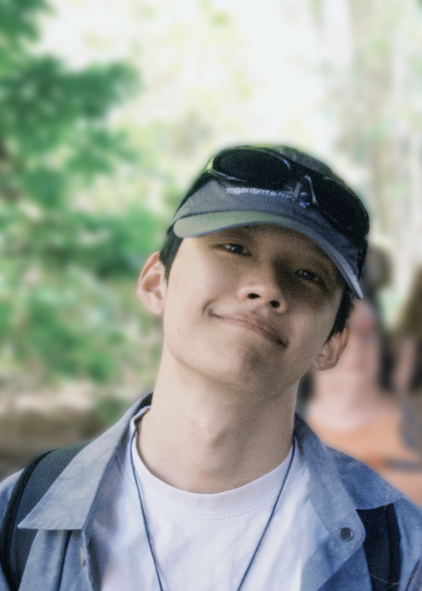

Yijun YangPh.D. Candidate |

|
News
- [05/2025] One paper accepted by MedIA.
- [04/2025] Vivim has been accepted by TCSVT. Welcome to try our dataset.
- [01/2025] One paper accepted by CVPR 2025.
- [01/2025] One paper accepted by TMI.
- [12/2024] We are organizing ISICDM 2024 Challenge 4: Ultrasound Video Thyroid Segmentation!
- [07/2024] One oral paper to appear in ACM MM 2024!
- [07/2024] One paper to appear in ECCV 2024.
- [06/2024] Four papers to appear in MICCAI 2024.
- [02/2024] Two papers to appear in CVPR 2024.
- [02/2024] Our Vivim and SegMamba are out as pre-print.
- [07/2023] One paper to appear in ACM MM 2023. Congrats to Hongtao!
- [07/2023] One first-author paper on Video Multi-Adverse-Weather Removal to appear in ICCV 2023.
- [05/2023] Our DiffMIC for medical image classification is early accepted by MICCAI 2023.
- [09/2022] We win the 4th place on the Grand Challenge P2ILF'2022
Biography
I am a third-year Ph.D. candidate at the Hong Kong University of Science and Technology (Guangzhou) supervised by Prof. Lei Zhu and Dr. Huazhu Fu. I obtained my Bachelor degree with honors in Artificial Intelligence at School of Computer Science and Technology, Shandong University in 2022. I also work closely with Dr. Angelica I. Aviles-Rivero, Dr. Shujun Wang and Prof. Carola-Bibiane Schönlieb at University of Cambridge.
My research interests mainly lie in Generative World Modeling, Medical Image Analysis, Low-level Vision.
I am on the job market for 2026. Feel free to reach out to me if you are interested in collaboration. (🛰️ Wechat: scottyang924)
Experience
- 2021.11-2022.08 The University of Cambridge Visiting student advised by Dr. Angelica I. Aviles-Rivero, Dr. Shujun Wang and Prof. Carola-Bibiane Schönlieb,
- 2021.06-2021.09 The University of Hong Kong Research intern advised by Prof. Lequan Yu,
- 2020.12-2021.06 iLearn Lab, Shandong University Research assistant advised by Prof. Gan Tian,
Topic: Domain Generalization, Low-level vision
Topic: Medical Image Analysis, especially Domain Generalization and Multi-modality Learning
Topic: Video Understanding
Selected Publications
-
DiffMIC-v2: Medical Image Classification via Improved Diffusion Network
Yijun Yang, Huazhu Fu, Angelica I. Aviles-Rivero, Zhaohu Xing, Lei Zhu.
IEEE TMI, 2025.
-
Vivim: a Video Vision Mamba for Medical Video Segmentation
Yijun Yang, Zhaohu Xing, Lequan Yu, Huazhu Fu, Chunwang Huang, Lei Zhu.
IEEE TCSVT, 2025. [code]
-
Detect Any Mirrors: Boosting Learning Reliability on Large-Scale Unlabeled Data with an Iterative Data Engine
Zhaohu Xing, Lihao Liu, Yijun Yang, Hongqiu Wang, Tian Ye, Sixiang Chen, Wenxue Li, Guang Liu, Lei Zhu.
CVPR 2025.
-
RainMamba: Enhanced Locality Learning with State Space Models for Video Deraining
Hongtao Wu, Yijun Yang, Huihui Xu, Weiming Wang, Jinni Zhou, Lei Zhu.
ACM MM 2024. (oral)
-
Semi-Supervised Video Desnowing Network via Temporal Decoupling Experts and Distribution-Driven Contrastive Regularization
Hongtao Wu, Yijun Yang, Angelica Aviles-Rivero, Jingjing Ren, Sixiang Chen, Haoyu Chen, Lei Zhu.
ECCV 2024.
-
SegMamba: Long-range Sequential Modeling Mamba For 3D Medical Image Segmentation
Zhaohu Xing, Tian Ye, Yijun Yang, Guang Liu, Lei Zhu.
MICCAI 2024. (early accepted), (spotlight) [code]
-
Diff-VPS: Video Polyp Segmentation via a Multi-task Diffusion Network with Adversarial Temporal Reasoning
Yingling Lu, Yijun Yang, Zhaohu Xing, Qiong Wang, Lei Zhu.
MICCAI 2024. (early accepted)
-
LGRNet: Local-Global Reciprocal Network for Uterine Fibroid Segmentation in Ultrasound Videos
Huihui Xu*, Yijun Yang*, Angelica I. Aviles-Rivero, Guang Yang, Jing Qin, Lei Zhu.
MICCAI 2024. (early accepted)
-
Genuine Knowledge from Practice: Diffusion Test-Time Adaptation for Video Adverse Weather Removal
Yijun Yang, Hongtao Wu, Angelica I. Aviles-Rivero, Yulun Zhang, Jing Qin, Lei Zhu.
CVPR 2024. [code]
-
MammoDG: Generalisable Deep Learning Breaks the Limits of Cross-Domain Multi-Center Breast Cancer Screening
Yijun Yang, Shujun Wang, Lihao Liu, Sarah Hickman, Fiona J Gilbert, Carola-Bibiane Schönlieb, Angelica I. Aviles-Rivero.
Under review.
-
Mask-Guided Progressive Network for Joint Raindrop and Rain Streak Removal in Videos
Hongtao Wu, Yijun Yang, Haoyu Chen, Jingjing Ren, Lei Zhu.
ACM MM 2023.
-
Video Adverse-Weather-Component Suppression Network via Weather Messenger and Adversarial Backpropagation
Yijun Yang, Angelica I. Aviles-Rivero, Huazhu Fu, Ye Liu, Weiming Wang, Lei Zhu.
-
DiffMIC: Dual-Guidance Diffusion Network for Medical Image Classification
Yijun Yang, Huazhu Fu, Angelica I. Aviles-Rivero, Carola-Bibiane Schönlieb, Lei Zhu.
MICCAI 2023. (early accepted) [code]
-
HCDG: A Hierarchical Consistency Framework for Domain Generalization on Medical Image Segmentation
Yijun Yang, Shujun Wang, Lei Zhu, Lequan Yu.
arXiv. [code]
Professional Activities
Invited Talks:
Paper Reviews:
Teaching Assistant:
Awards & Competitions